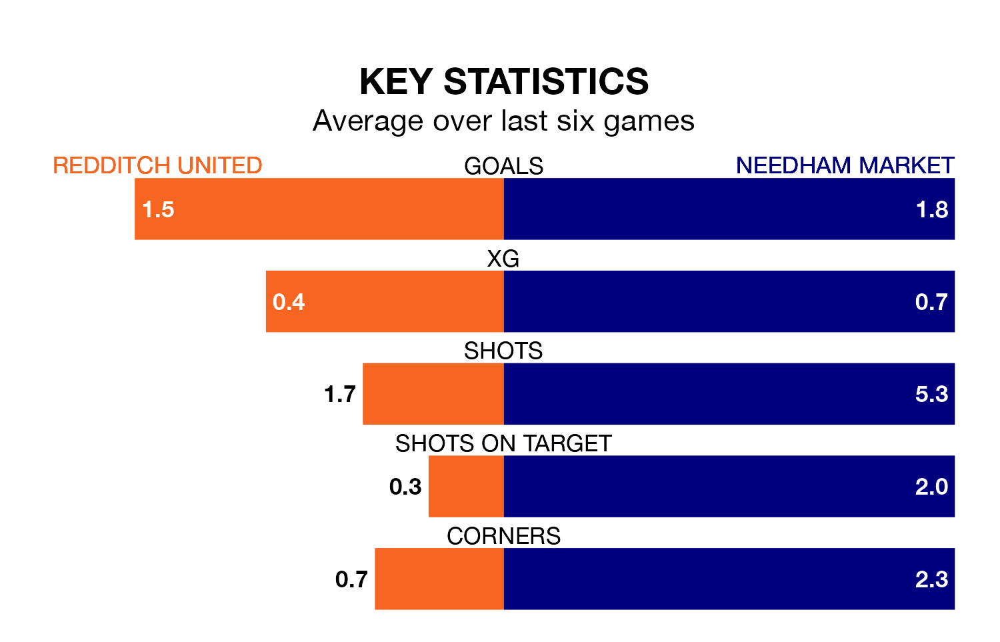

Needham Market travel to the Valley Stadium for Saturday's match against Redditch United looking to bounce back from defeat last time out in the Southern League Premier Central.
Needham Market, who sit top of the league after 39 games, fell to a 2-0 home defeat to Mickleover Sports on April 20.
They face a Redditch side who secured a draw in their last match, a 3-3 tie with Barwell, and who sit sixth in the table.
With 74 goals in 39 games so far this season, Needham Market are scoring more than average in the league with 1.9 goals per game. And they are conceding fewer than average, letting in 30 goals at a rate of 0.8 per game.
Redditch, meanwhile, are average scorers, with 1.5 goals per game. They have conceded 1.4 goals per game.
In the last 10 years, Redditch and Needham Market have played each other on 10 occasions. Redditch won two of them, Needham Market four, and they drew four times.
On average, Redditch scored 1.2 goals and Needham Market 1.6 in those matches.
Their last meeting was on March 19, when Needham Market won 3-0 at home.
United are in mixed form in the Southern League Premier Central, with two wins and a draw from their last six games.
With four wins and two losses over that period, the away side's form is better – they have taken 12 points from 18, compared to the hosts' seven.
Updated: 07:59 (UTC), 26/04/24